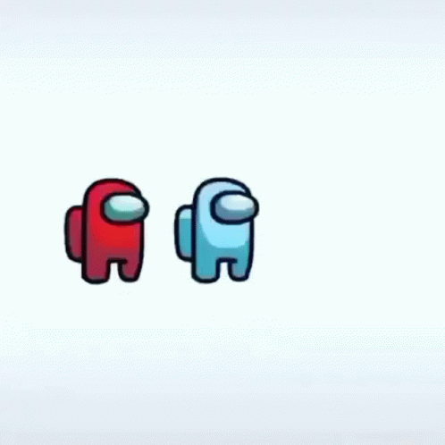
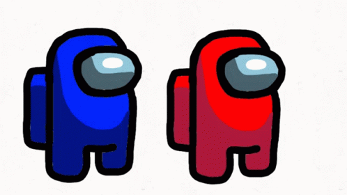
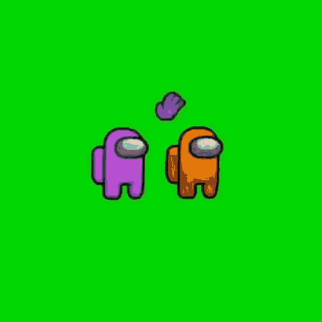

What Color Are You in Among Us? Answer these questions to find out!
Do like stability in your life? Or do you like to be implusive?
Yes, I NEED Stability
I like having more stability than chaos
I need an equal mix of both!
I like to be more implusive in my life
Nope,I like to be Implusive!
Are you generally trusting of people?
Yes
Yes, if they seem trustworthy
It depends on the situation
No, if they seem shady
No
Is your personality serious or laidback?
Serious
I'm pretty serious in general
It can be either
I'm usually laidback
Laidback
When working with a group of people, what role do you take on?
The Leader, who calls the shots
The Peacekeeper, who stops disagreements
The Editor, who looks everything over
Just a member
I like to work alone
How long does it take you to get work done?
I get it done ASAP
I procrastinate a little bit
It depends on the task
I try my best to get it done, but it takes awhile
I procrastinate a lot
Do you stand out in crowd?
Yes
Sometimes
No
Do you like to be the imposter?
Yes
Sometimes
No
RESULTS
  